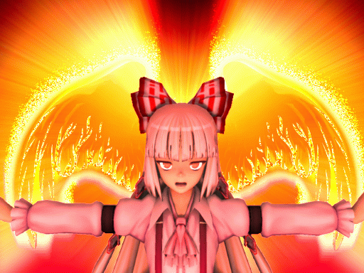
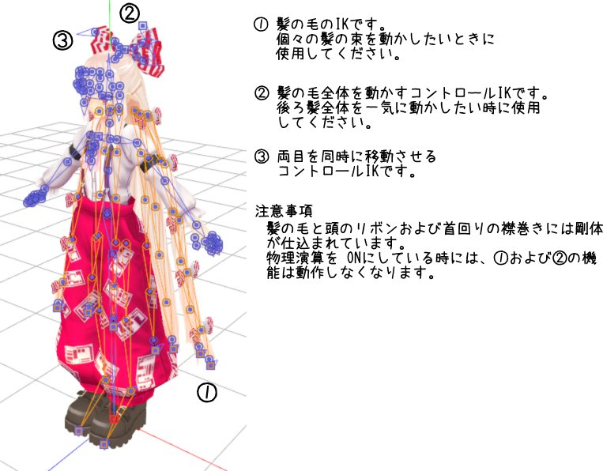
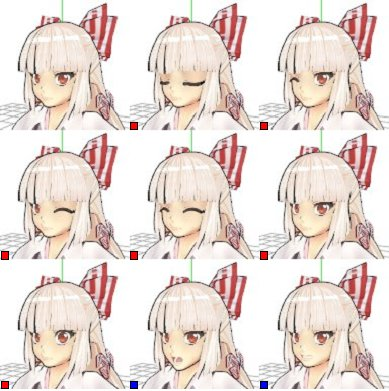
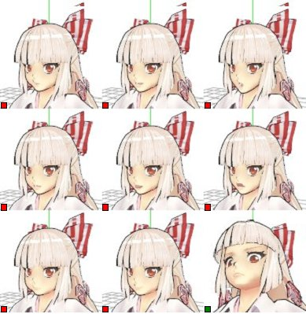
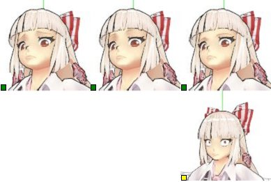
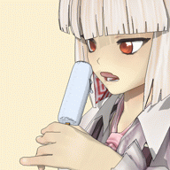

MikuMikuDance用 東方キャラ 第七弾(くらい？)

| 【モデル名】 |
藤原妹紅 |
| 【バージョン】 |
V1.0 (100106版) |
| 【改造/再配布】 |
改造、再配布共に「可」です。
改造したデータは、可能な限り VPVPのアップローダを使用していただくか、
ご面倒とは思いますが、当方に連絡いただき、
当方サイトでの公開とさせてください。
本文末の「最後に」に記載されている内容の遵守をお願いします。 |
⊂！！使用上の注意点！！⊃
物理演算について
- 物理演算バージョンは 2種類用意しました。 用途用途で使い分けてください。
- 藤原妹紅_物理A…全体的におとなしめの動きをします。
- 藤原妹紅_物理B…若干、動作に対する反応が大きいです。
特に横髪はモーションによっては身体に絡みつくかもしれません。
モーフについて
- 舌のモーフは、3つ以上のモーフを組み合わせて使用します。
まず、舌を出したときに違和感のないリップの表情を作ります。
次に、舌を出して、最後に舌の上下の動きのモーフを使用します(後述例参照)。
⊂各種IKとコントロールボーン⊃
以下の図のようになっております。

⊂モーフ一覧⊃
(凡例)
マークなし…標準
青…目
赤…リップ
緑…眉
黄…その他

| 基本 |
まばたき |
ウィンク |
| ウィンク２ |
笑い |
威嚇 |
| 威嚇２ |
あ |
い |

| う |
え |
お |
| 口あけ |
舌(※1) |
レロレロ(※2) |
| む |
にやり |
怒り |
※1…口あけと併用
※2…口あけと舌と併用(使用例を後述)

舌とレロレロモーフの使用例(正直すまんかった)

⊂最後に⊃
本データの使用に当たっては、上海アリス幻楽団の二次創作ガイドラインに沿った利用をお願いいたします。
上海アリス幻樂団創作物の二次創作・使用関連ページ
改造、再配布は自由に行っていただいてかまいませんが、著しく公序良俗に反する使用法や、また、原作者様、その他の関係者(MMDで楽しまれている方など)に迷惑をかける使用法は絶対に避けてください
謝辞
今回は、以下の方々にご協力をいただき、当モデルを MMDモデルとしてリリースできるようになりました。この場をお借りしてお礼申し上げます。
モデル作成…モンテコアさん
MMDモデル変換準備作業、仮ボーン組み…nya
髪の毛ボーン仕込み、全体ボーン、ウェイトの調整など…ルシールさん
toon、色調調整…pironさん
物理演算組み込み…kurakさん
追加モーフ、お披露目動画作成…ムロさん
ほか、にゃっぽんにてご意見をくれた方々
なお、当モデルへのご意見、要望などありましたら、私 nyaのほうまでお願いします。
※ にゃっぽん、もしくは pixivに加入しています。
⊂バージョンアップ履歴⊃
執筆者：nya
ブログ等はありません。当方作成分の MMDデータは以下の URLに置いてあります。
MikuMikuDance関連のページ